1028H34 Set of connecting rods with pistons and cylinder liners/bores - R.R. with engine and cylinder heads removed
- Path
- Procedures > 10 ENGINE > 1028 PISTONS AND CONNECTING RODS > 1028H PISTONS AND CONNECTING RODS > 1028H34 Set of connecting rods with pistons and cylinder liners/bores - R.R. with engine and cylinder heads removed
- Kind
- repair procedure (removal / refitting; the operation number is the code)
- Applies to
- engines: 3.0 V6, 3.2 V6; all production periods
- Interactive page
- https://sloeber94.github.io/elrnDB-lThss/en/#/752229
Applies to: engines: 3.0 V6; all production periods
 Removing
Removing
 Refitting
Refitting- Rotate the engine through 180° on the overhaul stand.
1. Undo the bolts (1a) and remove the crankcase sump (1b) complete with fixed belt tensioner for the engine components single belt (1c) and rpm and timing sensor (1d).
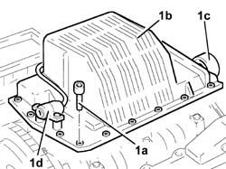
Applies to: engines: 3.0 V6; all production periods
1. Fit the tool.
 | Description | Code | Function |
|---|---|---|---|
1 | Flange | 1.860.815.000 | - |
- Rotate the crankshaft so that the right bearing cap bolts are accessible.
2. Undo the nuts (2a) and remove the connecting rod caps (2b) complete with the right half-bearings (2c).
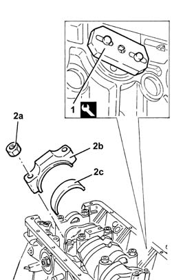
Applies to: engines: 3.0 V6; all production periods
- Rotate the engine through 180° on the overhaul stand.
1. Remove the tools from the right side.
| Description | Code | Function |
|---|---|---|---|
1 | Cylinder bore lock | 1.860.829.000 | - |
2. Remove the cylinder bores (2a), the connecting rod-piston assemblies (2b) and the half-bearings (2c) for the right side.
- Separate the connecting rod-piston assemblies from the cylinder bores.
- Carry out the same operations for the removal for the bores and the connecting rod-piston assemblies for the left side.
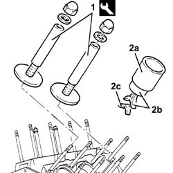
Applies to: engines: 3.0 V6; all production periods
Refitting
Removing- Fit the cylinder liners/bores complete with seals in the cylinder block/crankcase and secure them using the tool to tighten the nuts to torque.
| Description | Code | Function |
|---|---|---|---|
. | Cylinder bore lock | 1.860.829.000 | - |
1. Measure the projection of the cylinder liners/bores in relation to the cylinder block/crankcase plane using the tool (1a) fitted with a dial gauge (1b) and check that it corresponds to the recommended values.
 | Subject | Value |
|---|---|---|
1 | Cylinder bores | - |
- | Cylinder block/crankcase projection | 0.01 - 0.06 |
| Description | Code | Function |
|---|---|---|---|
1a | Dial gauge support | 1.870.404.000 | - |
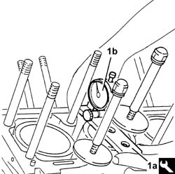
Applies to: engines: 3.0 V6; all production periods
- Fit the connecting rod-piston assemblies, complete with half-bearings, in the cylinder liners/bores using a suitable tool.
- Rotate the engine crankcase through 180° on the overhaul stand.
- Fit the tool.
| Description | Code | Function |
|---|---|---|---|
. | Flange | 1.860.815.000 | - |
- Rotate the crankshaft and fit the connecting rod caps complete with half-bearings and tighten them to torque using the bolts.
 | Value - daNm | Fastening | Component | Ø |
|---|---|---|---|---|
. | 2.0 + 50° | Nut | CONNECTING ROD CAPS | M9 |
- Remove the tool.
| Description | Code | Function |
|---|---|---|---|
. | Flange | 1.860.815.000 | - |
- Apply the recommended sealant to the entire perimeter of the crankcase sump.
 | Description | Qty. | Component | Type | Classification |
|---|---|---|---|---|---|
. | Dow corning 7091 | - | OIL SUMP | Silicone sealant | - |
- Fit the crankcase sump complete with rpm and timing sensor and fixed belt tensioner for the engine components drive belt.
- Tighten the crankcase sump bolts to the recommended torque.
| Value - daNm | Fastening | Component | Ø |
|---|---|---|---|---|
. | 1.4 - 2.0 | Bolt | CRANKCASE SUMP | M7 |
Applies to: engines: 3.2 V6; all production periods
Removing
Refitting- Rotate the engine through 180° on the overhaul stand.
1. Undo the bolt (1a) and remove the engine components single belt fixed tensioner (1b).
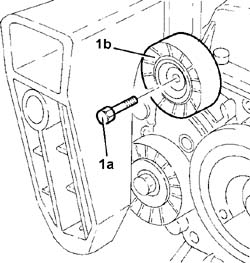
Applies to: engines: 3.2 V6; all production periods
1. Undo the bolts (1a) and remove the rpm sensor shield (1b).
2. Remove the rpm sensor complete with mounting.
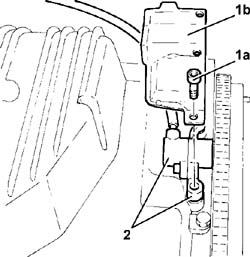
Applies to: engines: 3.2 V6; all production periods
1. Undo the bolts fixing the engine oil sump.
2. Cut the crankcase sump sealant using the tool.
| Description | Code | Function |
|---|---|---|---|
2 | Blade | 1.870.718.000 | Cut the crankcase sump sealant |
3. Remove the crankcase sump.
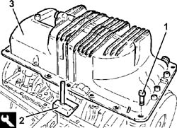
Applies to: engines: 3.2 V6; all production periods
1. Fit the flywheel lock.
| Description | Code | Function |
|---|---|---|---|
1 | Counter-torque | 1.860.779.000 | Flywheel lock |
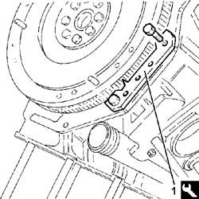
Applies to: engines: 3.2 V6; all production periods
1. Undo the nuts (1a) and remove the crankshaft pulley (1b).
2. Remove the toothed timing belt.
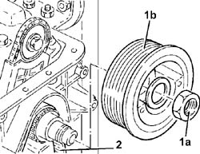
Applies to: engines: 3.2 V6; all production periods
1. Undo the bolt fixing the engine oil pump drive chain to the oil pump.
2. Move the engine oil pump drive chain (2a) away from the pump using the tool (2b).
| Description | Code | Function |
|---|---|---|---|
2b | Extractor | 1.860.954.001 | Extracting engine oil pump drive chain |
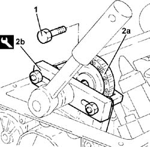
Applies to: engines: 3.2 V6; all production periods
1. Undo the bolts (1a) and remove the engine oil pump (1b).
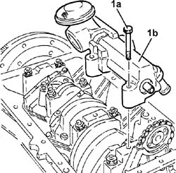
Applies to: engines: 3.2 V6; all production periods
1. Undo the bolts (1a) and remove the engine flywheel (1b).
2. Remove the flywheel lock.
| Description | Code | Function |
|---|---|---|---|
2 | Counter-torque | 1.860.779.000 | Flywheel lock |
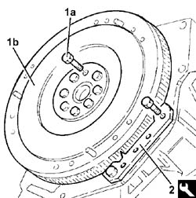
Applies to: engines: 3.2 V6; all production periods
1. Fit the tool for rotating the crankshaft.
| Description | Code | Function |
|---|---|---|---|
1 | Flange | 1.820.618.000 | Crankshaft rotation |
- Rotate the crankshaft so that the right bearing cap bolts are accessible.
2. Undo the bolts (2a) and remove the bearing caps (2b) on the right side.
3. Remove the crankpin half-bearings.
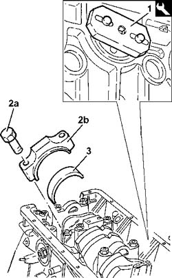
Applies to: engines: 3.2 V6; all production periods
- Rotate the engine through 180° on the overhaul stand.
1. Remove the cylinder liner/bore lock tools from the right side.
| Description | Code | Function |
|---|---|---|---|
1 | Cylinder bore lock | 1.820.279.000 | Keep the cylinder liners/bores in their seats |
2. Remove the cylinder liner/bore (2), piston and connecting rod assemblies (2b) for the right side.
- Separate the connecting rod-piston assemblies from the cylinder liners/bores.
3. Remove the crankpin half-bearings.
- Carry out the same operations for the removal of the cylinder liner/bore, piston and connecting rod assemblies for the left side.
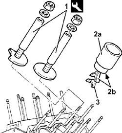
Applies to: engines: 3.2 V6; all production periods
Refitting
Removing- Fit new seals in the housings in the cylinder liners/bores.
1. Fit the cylinder liners/bores (1a) in their housings complete with seals (1b).
2. Fit the cylinder liner/bore lock tools (2a) and tighten the nuts to the recommended torque.
| Description | Code | Function |
|---|---|---|---|
2a | Cylinder bore lock | 1.820.279.000 | Keep the cylinder liners/bores in their seats |
| Value - daNm | Fastening | Component | Ø |
|---|---|---|---|---|
2b | 2.4 ÷ 2.6 + 228° ÷ 232° | Nut | CYLINDER LINER/BORE LOCK TOOLS | M12 |
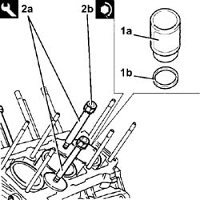
Applies to: engines: 3.2 V6; all production periods
1. Measure the projection of the cylinder liners/bores in relation to the cylinder block/crankcase (1a) plane using the tool (1b) fitted with a dial gauge (1c) and check that it corresponds to the recommended values.
| Subject | Value |
|---|---|---|
1a | Engine block cylinder liners/bores | mm |
- | Cylinder liner/bore projection in relation to the cylinder block/crankcase | 0.01 ÷ 0.06 |
| Description | Code | Function |
|---|---|---|---|
1b | Dial gauge support | 1.825.003.000 | Measure cylinder liner/bore projection |
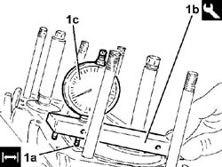
Applies to: engines: 3.2 V6; all production periods
1. Place the piston/connecting rod assemblies (1a) in their housings in the cylinder liners/bores complete with half-bearings (1b) using a suitable tool (1c).
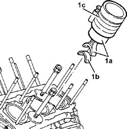
Applies to: engines: 3.2 V6; all production periods
- Rotate the engine through 180° on the overhaul stand.
- Rotate the crankshaft so that the connecting rod pins are accessible.
1. Fit the calibrated wire (plastigage) for measuring the bearing clearance.
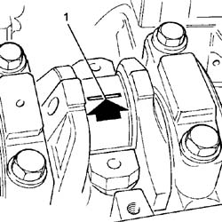
Applies to: engines: 3.2 V6; all production periods
1. Place the bearing cap (1a) in its seat complete with half-bearing (1b) and secure it by tightening the bolts (1c) to the recommended torque.
| Value - daNm | Fastening | Component | Ø |
|---|---|---|---|---|
1c | 1.9 ÷ 2.1 + 48° ÷ 52° | Bolt | CONNECTING ROD CAPS | M9 |
- Use the tool for the angular tightening of the connecting rod cap bolts.
| Description | Code | Function |
|---|---|---|---|
. | Torque wrench | 1.860.942.000 | Angular tightening of bearing cap bolts |
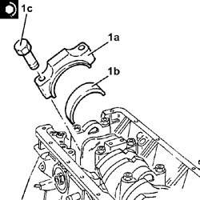
Applies to: engines: 3.2 V6; all production periods
1. Remove the bearing cap fitted previously and, using a suitable graduated measuring instrument (1a), measure the clearance shown by the calibrated wire (1b).
| Subject | Value | |
|---|---|---|---|
1b | Crankshaft | mm | |
- | - | Main journal/bearing clearance | |
- | Category A | 0.020 ÷ 0.060 | |
- | Category B | 0.023 ÷ 0.063 |
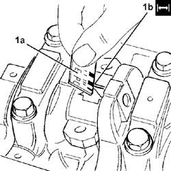
Applies to: engines: 3.2 V6; all production periods
- Rotate the crankshaft so that the connecting rod pins are accessible.
1. Place the bearing caps (1a) in their seats complete with half-bearings (1b) and secure them by tightening the bolts (1c) to the recommended torque.
| Value - daNm | Fastening | Component | Ø |
|---|---|---|---|---|
1c | 1.9 ÷ 2.1 + 48° ÷ 52° | Bolt | CONNECTING ROD CAPS | M9 |
- Use the tool for the angular tightening of the bearing cap bolts.
| Description | Code | Function |
|---|---|---|---|
. | Torque wrench | 1.860.942.000 | Angular tightening of bearing cap bolts |
Applies to: engines: 3.2 V6; all production periods
- Remove the tool for rotating the crankshaft.
| Description | Code | Function |
|---|---|---|---|
. | Flange | 1.820.618.000 | Crankshaft rotation |
1. Position the engine oil pump (1a) in its housing and secure it tightening the bolt (1b) to the recommended torque.
| Value - daNm | Fastening | Component | Ø |
|---|---|---|---|---|
1b | (Main bearing caps side) 4.5 - 5.5 | Bolt | ENGINE OIL PUMP | M10 |
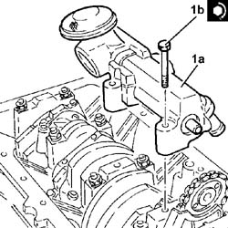
Applies to: engines: 3.2 V6; all production periods
1. Place the flywheel in position and secure it without tightening the bolts.
2. Fit the flywheel lock.
| Description | Code | Function |
|---|---|---|---|
2 | Counter-torque | 1.860.779.000 | Flywheel lock |
3. Tighten the bolts securing the engine flywheel to the recommended torque.
| Value - daNm | Fastening | Component | Ø |
|---|---|---|---|---|
3 | (Crankshaft side) 2.9 -3.2 + 48° - 51° | Bolt | FLYWHEEL (MECH.) | M12 |
- Use the tool for the angular tightening of the flywheel fixing bolts.
| Description | Code | Function |
|---|---|---|---|
. | Torque wrench | 1.860.942.000 | Engine flywheel bolts angular tightening |
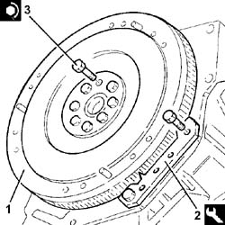
Applies to: engines: 3.2 V6; all production periods
1. Fit the engine oil pump drive chain (1a) on the oil pump, then tighten the bolt (1b) to the recommended torque.
| Value - daNm | Fastening | Component | Ø |
|---|---|---|---|---|
1b | (Engine oil pump side) 4.5 - 5.5 | Bolt | ENGINE OIL PUMP DRIVE CHAIN | M10 |
- Fit the toothed timing drive belt temporarily on the toothed drive pulley.
2. Position the crankshaft pulley (2a) in its housing and secure it tightening the nuts (2b) to the recommended torque.
| Value - daNm | Fastening | Component | Ø |
|---|---|---|---|---|
2b | (Crankshaft side) 22.8 - 25.2 | Left nut | CRANKSHAFT PULLEY | M28 |
- Remove the flywheel lock.
| Description | Code | Function |
|---|---|---|---|
. | Counter-torque | 1.860.779.000 | Flywheel lock |
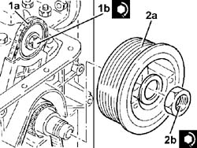
Applies to: engines: 3.2 V6; all production periods
- Apply the recommended sealant to the entire perimeter of the crankcase sump.
| Description | Qty. | Component | Type | Classification |
|---|---|---|---|---|---|
. | Loctite 5900 | - | OIL SUMP | Sealant | - |
1. Position the crankcase sump (1a) in its housing and secure it tightening the bolts (1b) to the recommended torque.
| Value - daNm | Fastening | Component | Ø |
|---|---|---|---|---|
1b | (Engine crankcase side) 1.4 - 1.7 | Bolt | OIL SUMP | M7 |
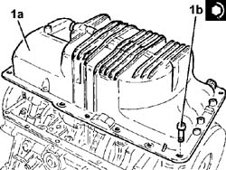
Applies to: engines: 3.2 V6; all production periods
- Place the rpm sensor complete with mounting in its housing.
- Place the rpm sensor guard in its housing and secure it using the bolts.
1. Position the engine components single belt fixed tensioner (1a) in its housing and secure it tightening the bolt (1b) to the recommended torque.
| Value - daNm | Fastening | Component | Ø |
|---|---|---|---|---|
1b | (Crankcase sump side) 2.3 - 2.8 | Bolt | SINGLE BELT FIXED TENSIONER VARIOUS | M8 |
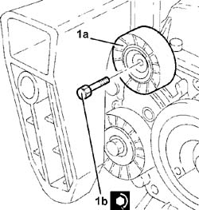